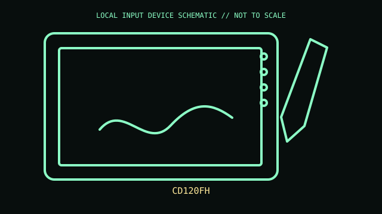

[ PEN TABLETS AND DIGITIZERS // IDENTIFIED COMPONENT ]
XP-Pen Artist 12 (2nd Gen)
Compact Full HD pen display with programmable shortcut keys and passive stylus.

MODEL IDENTIFICATION: CD120FH. Confirm the printed SKU, revision, bundle, region, and included accessories before repair or compatibility claims.
Model specifications
| Catalog leaf | Pen tablets and digitizers |
|---|---|
| Exact model / identifier | CD120FH |
| Mechanism and primary specifications | 11.9-inch 1920 × 1080 laminated display; eight shortcut keys; X3 Elite passive stylus, pressure/tilt input; USB-C video/data/power options vary by cable. |
| Compatibility and interface caveats | Check CD120FH on label; single-cable operation requires a compatible USB-C display output and power. Driver and application determine pressure and shortcut behavior. |
| Revision identification | Record the full label and software/firmware revision. Similar product-family names may use different protocols, components, connectors, or bundled accessories. |
Preservation and service
Protect display surface and USB-C connector; use supported cable arrangement and do not bend cable at the port.
Separate observed condition and test setup from vendor-published specifications; record host OS, driver/app version, cables, adapters, and accessories.
Primary manufacturer sources
- XP-Pen Artist 12 (2nd Gen)Manufacturer documentation; verify the exact SKU, revision, region, and accessories against the unit label. Original page is gone; this is the Internet Archive’s copy.
- XP-Pen drivers and manualsManufacturer documentation; verify the exact SKU, revision, region, and accessories against the unit label.
Manufacturer support pages can change; retain the applicable manual and its revision in the physical equipment record.